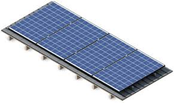

Solar panels are actually an assembly of photo-voltaic cells placed inside a framework.
Photo-voltaic cells are able to convert light into electricity.
The electricity produced is a direct current.
The best performance is achieved if they oriented perpendicular to the sun. Because the path of the sun varies
the amount of sun the solar panels receive may vary. This causes differences in voltage which may affect their performance.
Broken or shaded panels can be circumvented to optimize the performance.

The use of a charge controller is as it's name would imply, to control the rate a battery is charged or drained.
The reason for this is to prevent overcharging during the day and prevents power going back to the solar panels during the night.
This device prolongs the longevity of the batteries and can increase the amount of solar energy gained from solar panels by increasing thier efficiency.
Unlike normal batteries like for example a car battery, solar batteries are designed for prolonged, repeated and deep discharges.
Deep discharging means using most of its capacity. Normal batteries can't handle this.
For renewable energy this is however a must. The batteries need to work for the entire day and part of the night.
Need to be able to start and stop often based on the sunlight and use all of its charge after which it can switch back to the regular power network.
DC power stand for direct current power. When energy is created by a solar panel, the type of power that is created is DC.
This type of power provides a constant voltage. The type of power from you power socket at home however is AC, which stands for alternating current.
DC does have its uses. Your cell phone for example runs on DC power.
A big flat-screen TV also runs on DC power. AC power goes into the TV but is then converted into DC power.
To use the power that is created by a solar panel in your own home, it first needs to be inverted.
An inverter changes direct current power into alternating current power. This way it can be used by your everyday commercial appliances.
Power converters that are made for solar have special functions to maximize power extraction and maximize protection.
There are three broad types: stand-alone inverters, grid-tie inverters and intelligent hybrid inverters.

AC power stand for alternating current power. This is the standard power which is also used for the power sockets in you own home.
This power reverses its current direction periodically.
The reason for AC power is that its voltage can be manipulated with a transformer. Raising the voltage is best for transporting the power over long distances.
The reason for this is that less heat is created, which means less energy is lost during transport. Its voltage can then be lowered for safer use.